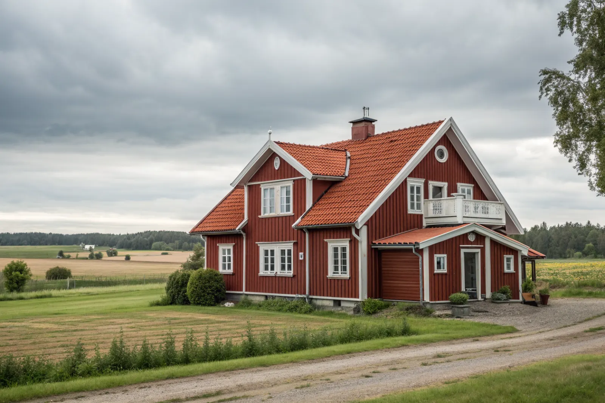

Takbyte i Vallentuna
Byte av tegel-, betong- och plåttak.
Takbyte i Vallentuna →Vallentuna norr om Stockholm blandar villaområden kring centrum med landsbygd och gårdar i Roslagen. Vi är takläggare i Vallentuna för villor, gårdar och fritidshus i bland annat Vallentuna centrum, Bällsta, Ormsta, Lindholmen, Kårsta och Brottby.
Tätorten Vallentuna byggdes ut kraftigt under 1970- och 80-talet, med villor och radhus i bland annat Ormsta och Bällsta. Taken från den perioden har ofta betongpannor och originalunderlag som nu behöver ses över.
Utanför tätorten, i Lindholmen, Kårsta och Brottby, finns gårdar, äldre bostadshus och ekonomibyggnader med tegeltak, plåttak och gamla skivtäckningar. Hus i öppet jordbrukslandskap är mer utsatta för vind än de i villaområdena.
Vallentunasjön och de många skogsdungarna ger fukt och påväxt på en del tak. Vi anpassar åtgärderna efter husets ålder, material och läge.
Oavsett om du behöver ett komplett takbyte eller en riktad renovering ger vi en tydlig bedömning och offert. Vi arbetar även i grannområden – se alla områden vi arbetar i.

I villaområdena från 1970–80-talet ser vi betongpannor som tappat ytan, underlagspapp som spruckit och läkt som tagit fukt vid takfoten. På äldre gårdshus är det ofta takstolar och underlag som behöver förstärkas innan ett tyngre tak kan läggas.
På ekonomibyggnader och äldre bostadshus förekommer korrugerade fibercementskivor. Om de lagts före början av 1980-talet kan de innehålla asbest och ska rivas av behörig personal – något vi planerar in innan arbetet startar.
Bygglov hanteras av Vallentuna kommun. Ett byte till samma material och kulör kräver normalt inget lov. Ligger huset inom detaljplan eller i en kulturmiljö kan det finnas krav på utseende – stäm av med kommunen innan du byter material.
På gårdar med långa uppfarter och mjuk mark planerar vi var container och ställning ska stå och när leveranser kan ske, så att marken klarar tunga transporter.
Byte av tegel-, betong- och plåttak.
Takbyte i Vallentuna →Riktade åtgärder som förlänger takets liv.
Takrenovering i Vallentuna →Bedömning av skick inför beslut.
Takbesiktning i Vallentuna →Nytt ytskydd på plåttak.
Takmålning i Vallentuna →Skonsam tvätt och mossbehandling.
Taktvätt i Vallentuna →Nytt plåttak och plåtarbeten.
Plåttak i Vallentuna →Vi utgår från Bromma (Mariehäll) och tar uppdrag i hela Vallentuna kommun, även på landsbygden. Vi samlar platsbesök och planerar etableringen i förväg.
Läs mer om tak på villa eller jämför takbyte och takrenovering innan du bestämmer dig.
Vi arbetar även i Täby.
Takläggare i Täby →Vi arbetar även i Upplands Väsby.
Takläggare i Upplands Väsby →Vi arbetar även i Österåker.
Takläggare i Österåker →Vi arbetar även i Danderyd.
Takläggare i Danderyd →